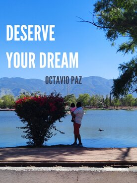
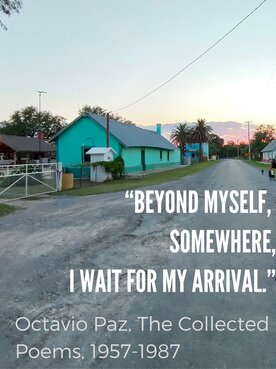

- 1914 – Born in Mexico City
- 1920 – Starts exploring his grandfather's personal library (around 7000 volumes).
- 1922 – "One day –I had 7 or 8 years of age – I found myself writing a poem".
- 1930 – In an effort to defend Mexican farmers, he is arrested for the second time for interrupting a political public discourse.
- 1932 – Begins Law school at the UNAM.
- 1934 – Lázaro Cárdenas becomes President of Mexico, which will make of Mexico one of the iconic left-wing governments of the time, along with the URSS and Spain.
- 1934 – 1949 – After his father's death dropped school and worked for various government instances, wrote various poems, met teachers, got acquainted with various poetry world figures. During this time he demonstrated a keen interest in politics and writing which prepared him to deliver his first renown poem: Labyrinth of Solitude.
- 1950 – Published in Mexico City The Labyrinth of Solitude, later published in french, canonized in Mexican literature, and part of the UNESCO collection of representative works.
- 1951 – Defended "Los Olvidados" a Luis Buñel Film describing the lives of marginal children living in large cities. This is the first time Paz confronted "Burgois morality" after they had rejected the film. He advocated for the film in Cannes Film Festival. The film won the prize and returned to Mexico's cinema.
- 1956 – Published El arco y la lira, one of the works in the UNESCO Collection of Representative Works, a poem of history and criticism.
- 1968 – Mexican military operation fires at students protesting against the government, leaves an estimate of 300 dead. Paz rescindes as ambassador and comes back to Mexico. Publishes a harsh critique against Mexico's President Gustavo Dias Ordaz for the repression against the students.
- 1981 – Spain's King, Juan Carlos I de Borbon, awards Paz with Premio Cervantez.
- 1982 - 1983 – Publishes Sor Juan Inés de la Cruz o las trampas de la fe, a large biogray of the novohispanic nun.
- 1990 – Won the Nobel Literature Prize.